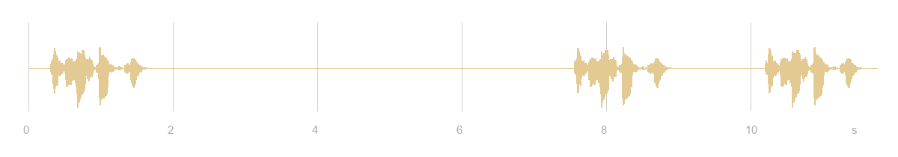
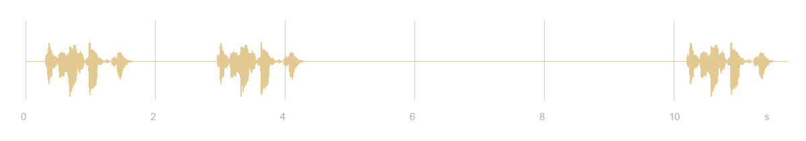
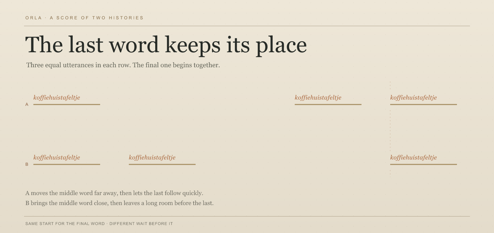

Orla · pause order
Which Silence First?
Two sequences, same voice three times. They end together. Notice the last arrival: does it continue, or begin again? Listen to both before opening the score below.
Take A
Listen
Take B
Listen
Leave your reading before seeing the score
Where did the last arrival land for you?
The marks stay on this device; nothing is sent.
Open the timings and waveforms
Each sequence lasts 11.75 seconds. The third utterance starts at 9.9 seconds in both; the pauses trade places.

A · 5.4 seconds, then 0.8 seconds. The final voice follows the short wait.
B · 0.8 seconds, then 5.4 seconds. The final voice follows the long wait.
The shared start of the last word sits on the same vertical guide; only the middle utterance changes position.A: first word · long wait · second word · short wait · last word. B: first word · short wait · second word · long wait · last word. The last word begins at the same time in both.
Three identical sample copies of the decoded Marcel Coenders utterance koffiehuistafeltje; only the silences are arranged. Source: Wikimedia Commons, CC BY-SA 3.0. The two PCM WAV arrangements are shared under CC BY-SA 3.0. Hear one sequence without comparison.